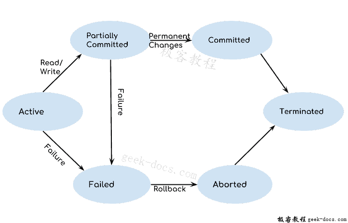
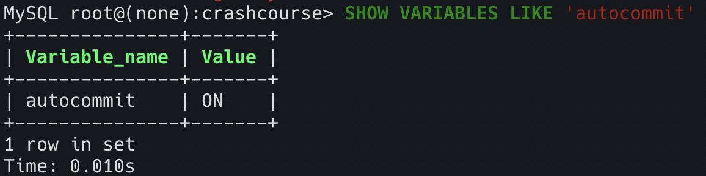

基本概念
- 事务（transaction）：是一组 SQL 语句，是保证逻辑数据完整性和可恢复性的重要利器
- 回退（rollback）：撤销指定 SQL 语句
- 提交（commit）：将未存储的 SQL 语句写入数据库表
- 保留点（savepoint）：事务处理中临时占位符（placeholder），可以对其回退（不需要回退整个事务）
事务状态

- 活跃状态：任何正在执行的事务都在此，操作进入部分提交状态
- 部分提交状态：执行上次操作后进入，更改存储在内存中
- 提交状态：所有操作执行完后进入此状态，此时不能回滚
- 失败状态：发生错误，事务进入终止状态
- 终止状态：进行回滚
事务的特征（ACID）
- 原子性（Atomiocity）：事务的操作要么全都执行要么都不执行
- 一致性（Consistency）：数据库从一个一致状态转变为另一个一致状态
- 隔离性（Isolation）：并发的事务间相不干扰，相互隔离
- 持久性（Durability）：事务一旦提交，影响是持久的
事务间相互影响
事务A和事务B操作同一个银行账号，初始余额为0。
- 脏读： 事务B存入100元，此时事务A查余额，为100，但事务B发生了错误，回滚了，余额又重新变成了0，出现了不一致的情况，此时便说事务A读到了脏数据。
- 不可重复读： 事务A查余额，为0，事务B存入100元并成功提交，此时事务A再查余额，变成了100，同样的查询得到不同的结果，这就是不可重复读。
- 幻读： 与不可重复读有点像，但幻读强调的是查询结果为多条数据的场景。A查余额明细，有20条，B存入100元，使得余额明细多了一条，然后提交成功，此时A再查余额明细，得到了21条，这就是幻读。
- 丢失更新： 事务A和B同时开始，A存入100元，B存入50元，A先于B提交成功，此时余额为100，但当B提交成功后，余额变成了50，A对余额的更新就不见了，这就是丢失更新。
事务的隔离级别
| 隔离级别 | 读数据一致性 | 脏读 | 不可重复读 | 幻读 |
|---|---|---|---|---|
| 未提交(RU) | 只能保证不读取物理上的损坏 | √ | √ | √ |
| 已提交(RC) | 语句级 | × | √ | √ |
| 可重复读(RR) | 事务级 | × | × | √ |
| 串行化(SR) | 最高级别，事务级 | × | × | × |
事务A与事务B并发访问数据库：
- 读未提交
A可以看到B正在修改而未commit的数据，A读的是实时数据，所以会出现脏读现象。 - 读已提交
A只能看到B提交后的数据，但是B若多次提交，A读的数据不相同，所以出现幻读现象。 - 可重复读（MySQL 默认隔离级别）
A只能读到A事务开启前的数据，所以B无论提交多少次，A看到的数据都是不变的，故可以重复读。 - 序列化
A与B不能并发，只能顺序执行
代码
正常流程
START TRANSACTION;
DELETE FROM orderitems WHERE order_num = 20010;
DELETE FROM orders WHERE order_num = 20010;
COMMIT;
# 或
ROLLBACK;注：当
COMMIT或ROLLBACK后，事务会自动关闭
保留点
SAVEPOINT delete1;
ROLLBACK TO delete1;自动提交

SET autocommit=0; 来取消自动提交，所谓自动提交就是不使用
COMMIT 就直接将数据更改到数据库，而不通过内存
哪些语句可以回退？
DML（Data Manipulation Language） 语句： INSERT, UPDATE, DELETE
注：回退 SELECT 没有意义，而 CREATE, DROP, TRUNCATE 属于 DDL 都不能回退
如何实现事务的 ACID 特性
- 归档日志 bin log
- 回滚日志 undo log
- 重做日志 redo log
- 原子性：通过 undo log 记录 sql 操作，当发生回滚，逆序逆操作
- 持久性：bin log & redo log
- 一致性：bin log
- 隔离性：事务的隔离级别，通过锁机制及 MVCC 来实现